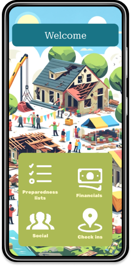

This was a Project for UI/UX Course
(COSC 025)


Crisis Companion is a mobile app designed to connect users with loved ones during emergencies, enabling quick and clear communication. Developed as part of a user-centered design project, the app focuses on accessibility and ease of use.

In times of crisis, clear and reliable communication can be a lifesaver. Many individuals struggle to
reach loved ones quickly and effectively under stress or during emergencies.
To create a user-friendly mobile app that streamlines communication by providing pre-written
messages, location sharing, facilitates access to aid, and emergency contact management.
Crisis Companion: Stress-Free Communication in Times of Crisis


Testers praised the app’s simplicity and utility, with a high interest in adopting it for personal use.
Conducted user research and synthesized insights into actionable design decisions.
Designed the UI/UX
in Figma, focusing on accessibility and usability.
Used Figma to create a low-fidelity wireframe and iterated based on user feedback.
Developed an
intuitive interface with large buttons and clear navigation.
Conducted surveys and interviews to understand communication challenges during emergencies.
Focused
on the needs of users with accessibility concerns or high-stress situations.
Interested in learning more about Crisis Companion or discussing collaboration opportunities? Reach out to me or check out my other projects!